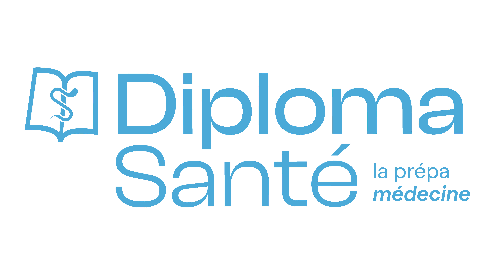

Diploma Santé
- UPEC LSPS3 S2
Instagram
Bases moléculaires en oncologie
Bases de thérapeutique du cancer

Menu
Accueil
Favoris
Bases moléculaires en oncologie
Cours 1
Cours 2
Cours 3
Cours 4
Cours 5
Cours 6
Cours 7
Cours 8
Cours 9
Cours 10
Cours 11
Human nutrition
Métabolisme bioénergétique (révision)
Anthropométrie, bilan énergétique, valeurs de référence en diététique
Macronutriments : protéines, glucides et acides gras
Les micronutriments : minéraux
Les vitamines liposolubles
Les vitamines hydrosolubles
Maladies cardiovasculaires
Alimentation et cancer
Consommation d'alcool et effets sur la santé
Interaction régime-maladie : obésité, syndrome métabolique et diabète
Interventions diététiques et pharmacologiques
One Health
Introduction au concept One Health
Zoonoses et modes de transmission
Émergence et diffusion de la résistance aux antibiotiques
Maladies émergentes transmises de l'animal à l'homme
Mobiliser les professionnels et la population autour des approches One Health
Polluants de l'environnement professionnel
Évaluation, prévention et gestion des risques en santé environnementale
Principales théories, concepts et modèles en sciences sociales (One Health)
Surveillance et investigation en santé publique et santé animale
Biodiversité des plantes et liens avec la santé humaine et animale
Écologie de la faune sauvage
Environnement, biodiversité, écologie, évolution des risques (partie 1)
Environnement, biodiversité, écologie, évolution des risques (partie 2)
Réglementation et éthique de la recherche - droit de la santé
Droit de la santé
Réglementation et recherche de la santé
Technique de vie et société
Vie, technique et société - Introduction
L'éthique à l'heure de la civilisation technologique
Le statut des objets techniques et des technologies dans le champ de la santé
Les droits et devoirs des patients et des praticiens
Le droit à l'information médicale
Enjeux et statuts des objets biologiques
La pensée des bio-objets chez Céline Lafontaine
La technicisation médicale, une déshumanisation : précisions conceptuelles
La médecine humaniste face à la biomédecine
Les médecines alternatives : de la critique humaniste à l'antiscience
Biomédecine et approche holistique : le modèle biopsychosocial